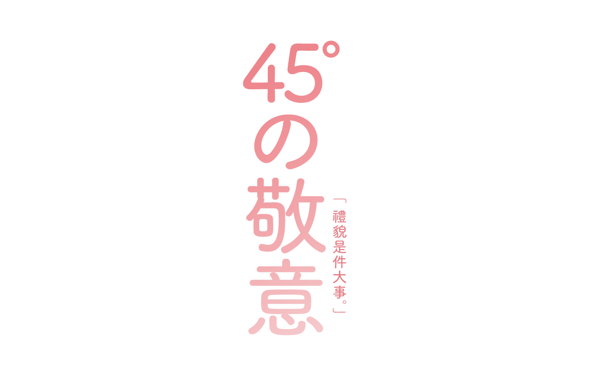
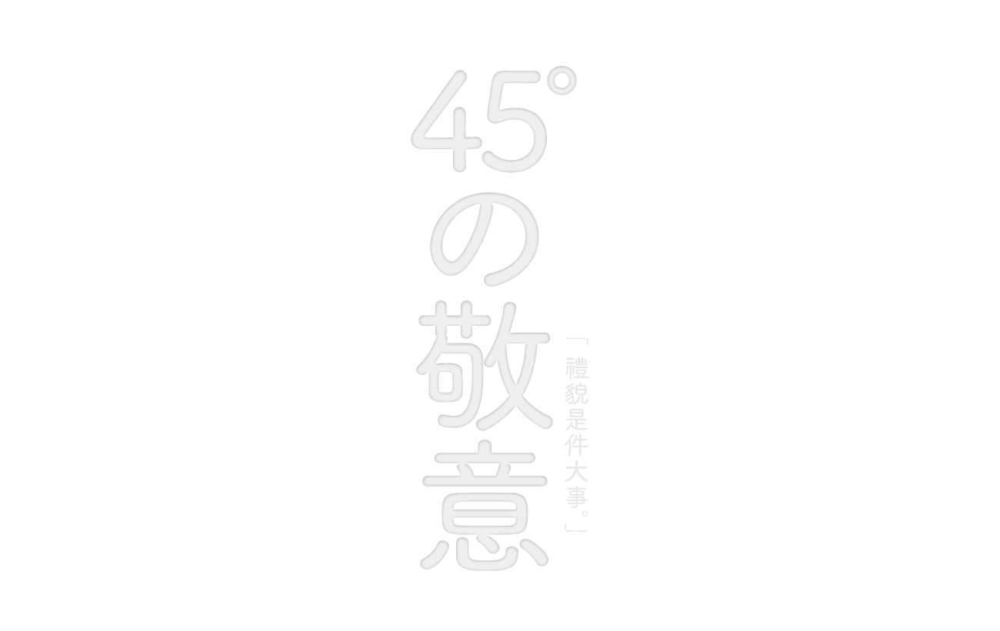
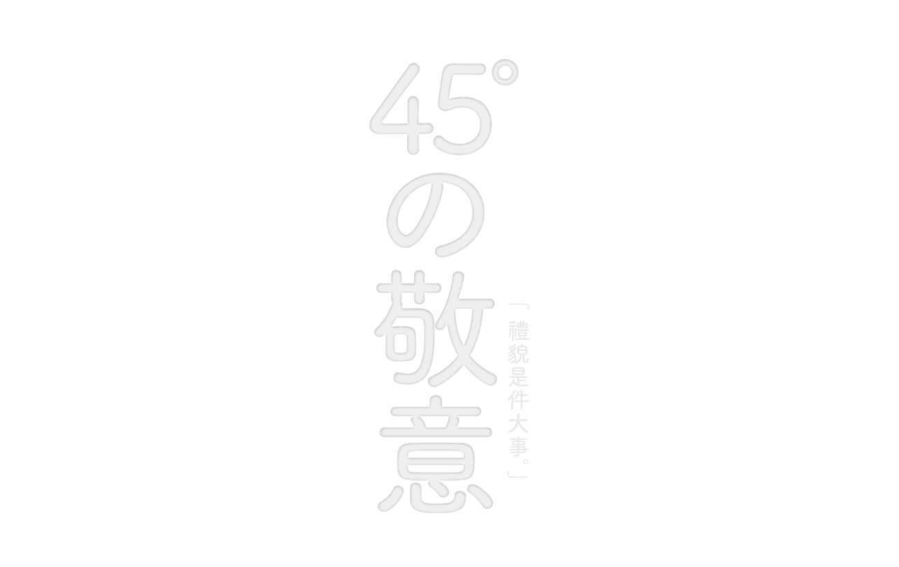

45°の敬意
TYPE: Activity
Client: Shih Chien University
2016
 

45°の敬意
禮儀隱藏在生活中的小細節裡，卻是一個大學問，在以禮貌著稱的日本，這更是一個不可忽視的文化 ; 日文漢字中，「躾」這個字假名寫法是しつけ，讀音是shi tsu ke，由「身」及「美」組合而成，意即將美好的事物加在身上，或許使自身表現得更美好，也是其涵意。因而從人際交往中最簡單也最頻繁的互動 —— 「鞠躬」出發，以鞠躬的角度做延伸，從鞠躬的敬意受到禮儀的溫暖。